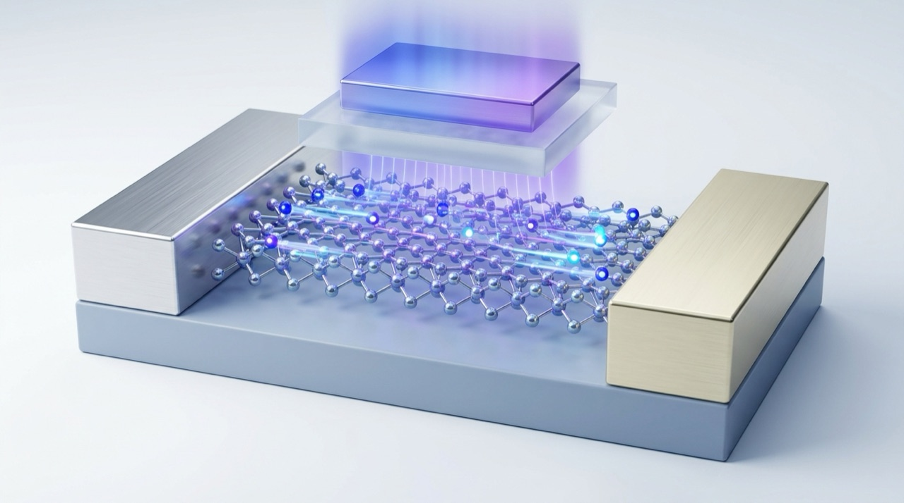

차세대 반도체 (Next Generation Semiconductors)
원자 한 층 두께의 2차원 반도체로 기존 실리콘 미세화 한계를 돌파합니다.

왜 중요한가요?
스마트폰과 AI 칩 속 실리콘 트랜지스터는 이제 수 나노미터까지 작아져, 전류가 새고 발열이 급증하는 물리적 한계에 부딪혔습니다. MoS₂·WS₂·WSe₂ 같은 2차원 반도체는 두께가 1나노미터 미만(머리카락의 약 10만 분의 1)이면서도 표면 결함이 없어, 초미세 크기에서도 전력을 아끼며 빠르고 정확하게 켜고 끌 수 있습니다.
ONE 1ab 핵심 연구 방향
- 고이동도·저전력 n형 및 p형 2차원 TMD 전계효과 트랜지스터(FET) 개발
- 저저항 반데르발스 접촉(contact) 공정 및 계면 결함 제어
- 소자 신뢰성(bias stress)·균일도 향상 및 차세대 CMOS 공정 호환성 확보
핵심 작동 원리
- 초박막 채널 제어: 원자 한 층(~0.7 nm) 두께 덕분에 게이트 전압이 채널 전체를 균일하게 제어해 누설 전류를 획기적으로 줄입니다.
- 매끈한 계면 특성: 층간 결합이 반데르발스 힘으로 이루어져 표면에 끊어진 결합(dangling bond)이 없으므로 전자가 산란 없이 빠르게 이동합니다.
- 전극·절연막 최적화: 2차원 반도체와 금속 전극 사이의 접촉 저항을 낮추고 초박막 고유전율 절연막을 결합해 구동 전압을 최소화합니다.
기대 응용 분야
초저전력 차세대 프로세서
발열을 크게 줄인 2 nm 이하급 차세대 연산 칩
온디바이스 AI 칩
배터리 소모를 최소화한 모바일·엣지 인공지능 반도체
3차원 적층 반도체
기존 실리콘 칩 위에 수직으로 쌓는 고집적 후공정(BEOL) 소자